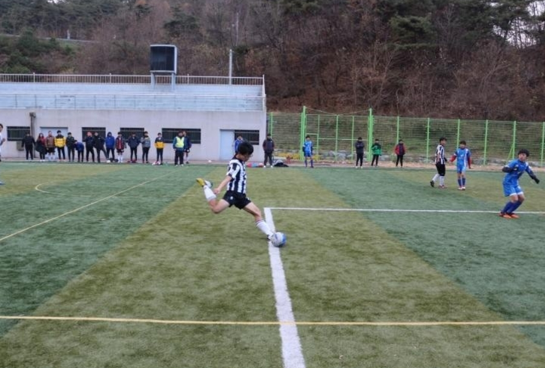

박성호는 1998년 3월21일(음력)에 태어났으며 약5살부터 축구를 하기시작했다.
축구를 시작한 박성호는 초등학교때 시대회에 나가서 2등으로 내토초등학교한테졌고 제천FC에서 공을 차는 법을 배우게되었다.
중학생이된 박성호는 점심먹고 축구 저녁먹고 풋살등 이일을 매일같이 반복했으며 시대회에서 1등을해 도대회에 나가지만 다들 밥을 너무많이먹어서 컨디션이 난조라 바로 떨어져버렸다.
고등학교에 갓 입학해서 제고컵을 했는데 3경기 8골이라는 엄청난 기록을 만들어내며 선배들과 친구들이 나의 경기를 보러 나올정도니 뭐 말은 다한거지 ㅋㅋㅋㅋ
지금은 축구를 보는 것도 하는것도 엄청난 흥미를 느끼지못하는 23살 박성호가 되어버렸다.
